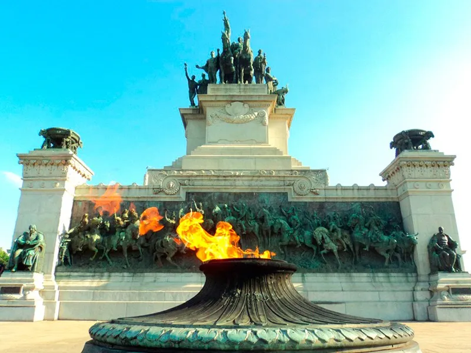
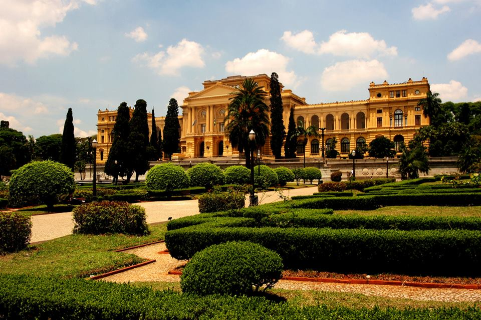

No parque, está localizado o Monumento à Independência, que retrata a cena da declaração de independência. A obra, de autoria do escultor Itamar Franco, foi inaugurada em 1922 e é um dos símbolos mais icônicos do local.
O parque abriga diversas espécies de árvores, plantas e aves, tornando-se um pequeno refúgio natural no meio da cidade. A conservação da fauna e flora é uma preocupação constante nas atividades de manutenção do parque.
